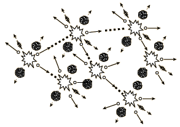

If an least one neutron from U-235 fission strikes another nucleus and causes it to fission, then the chain reaction will continue. If the reaction will sustain itself, it is said to be "critical", and the mass of U-235 required to produced the critical condition is said to be a "critical mass". A critical chain reaction can be achieved at low concentrations of U-235 if the neutrons from fission are moderated to lower their speed, since the probability for fission with slow neutrons is greater.
|

A fission chain reaction produces
intermediate mass fragments which are highly radioactive and produce further energy by their radioactive decay. Some of them produce neutrons, called delayed neutrons, which contribute to the fission chain reaction.
|